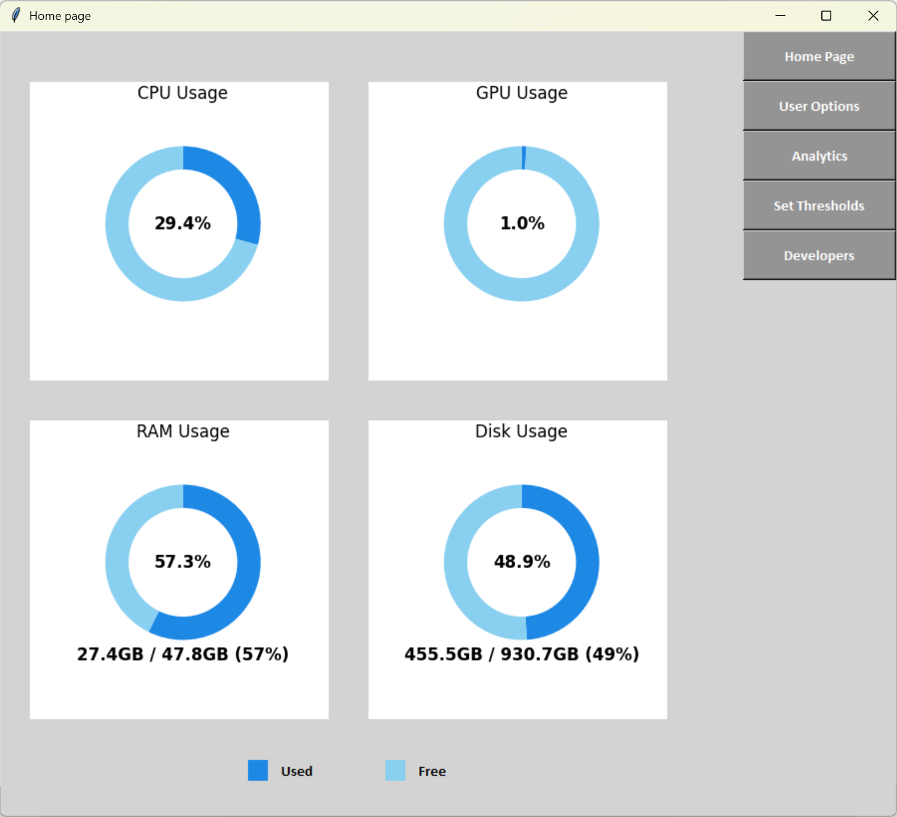
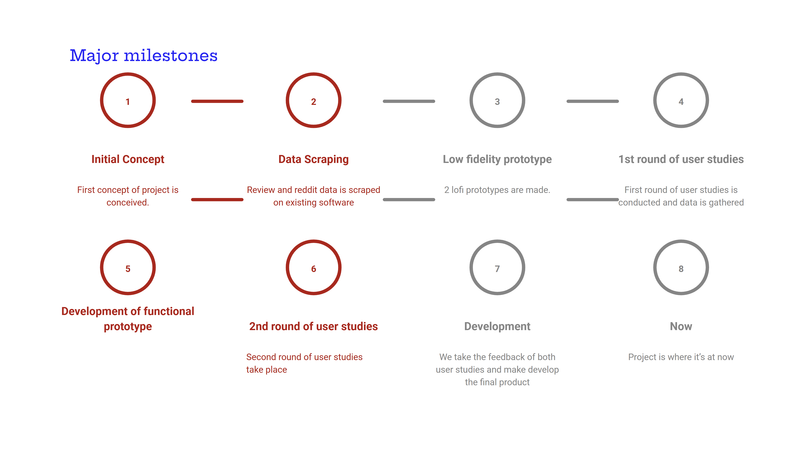

Desktop Performance Monitoring Tool
Motivation: Many users need a simple, customizable tool for real-time performance monitoring with actionable notifications. Current tools lack user-friendliness or personalization options. This project aims to address these gaps. View our detailed presentation: Motivation Presentation.
Online Study: Our online study identified key user needs for a performance monitoring tool, emphasizing CPU and memory usage stats. Read the full study: Online Study Document.
Prototyping Phase: Initial designs were iteratively refined based on feedback. Below is the final prototype:
Milestone Achieved: A major milestone involved integrating real-time monitoring with notification capabilities. Here's a visual summary:
Video Demo: Watch our tool in action:
User Studies:
We conducted two user studies to gather insights into user needs and tool usability. Explore the survey forms and the final report below:
- First User Study: Survey Form
- Second User Study: Survey Form
- Final Report: Download Report
Code Repository: Explore our code and implementation on GitHub: GitHub Repository.
Final Program: Download the complete program here: Download Program.
Other Projects
- Data Mining for Enterprise Scoring : Implemented predictive models to forecast second-hand car prices using statistical and machine learning methods. [Documentation]
- Bioinformatics Data Analysis : Analyzed RNA and DNA data using R, focusing on single-cell experiments and advanced statistical approaches.
- Real-Time Database Processing: Designed and implemented real-time data processing in a database system. Watch the [demo video] for details.